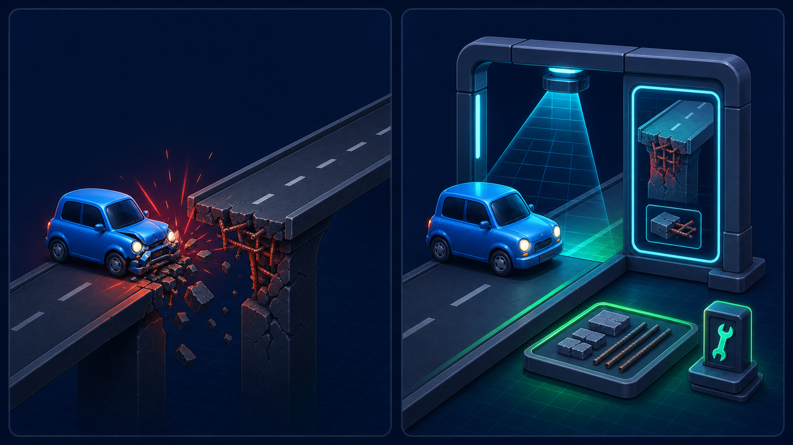

2편 · 33분 — 숨은 폭탄 찾기
5-7의 폭탄을 터뜨리며 시작. 왜 타입이 필요한지 몸으로 느끼고 문법을 속성으로 익힌다.

router.get('/me', (req,res)=>{ res.json(req.user.id); // 비로그인 → 실행 중 크래시 });
// req.user: User | undefined res.json(req.user?.id); // undefined일 수 있음 — // 실행 전에 경고
이 에러, 코드 짤 땐 아무도 안 알려줬다. 사용자가 겪고 나서야 안다. TS는 실행 전에 알려준다.
ts 파일 바로 실행 (“요즘 노드는 거의 그냥 실행”)any를 쓰면 안 되는 이유전환은 에러 개수를 0으로 줄여가는 게임. 처음 수백 개 떠도 정상이다.
tsconfig · @types/* 설치 → 첫 컴파일 에러 폭탄 화면req.user에 User 타입 확장여러분은 이제 JS 프로젝트를
TS로 전환해본 사람입니다.
이력서에 쓸 수 있는 경험. 다음 섹션의 네스트는 아예 처음부터 TS로 설계된 프레임워크 — 오늘 고생이 자산이 된다.